搭建博客的目的主要是为了整理记录自己学习过的知识点和解决过得问题，不然时间长了就忘了，好记性不如烂笔头啊。而为何选择自建博客，主要是为了所有博客自己能留个底，防止丢失。
搭建开始时，搜索了一下，目前主流的博客框架：一个是Ruby写的jekyll，一个是node-js写的hexo。至于区别的话，hexo生成静态页面的速度要比较快，jekyll是把原文上传github，可以直接生成博客，也可以用在线编辑器处理，hexo是本地生成html再上传。选择hexo主要是相比较jekyll而言，hexo操作简单而且有中文文档。
注册github
这块就不说了
创建github page
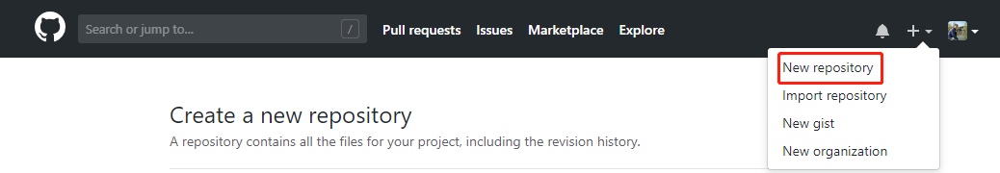
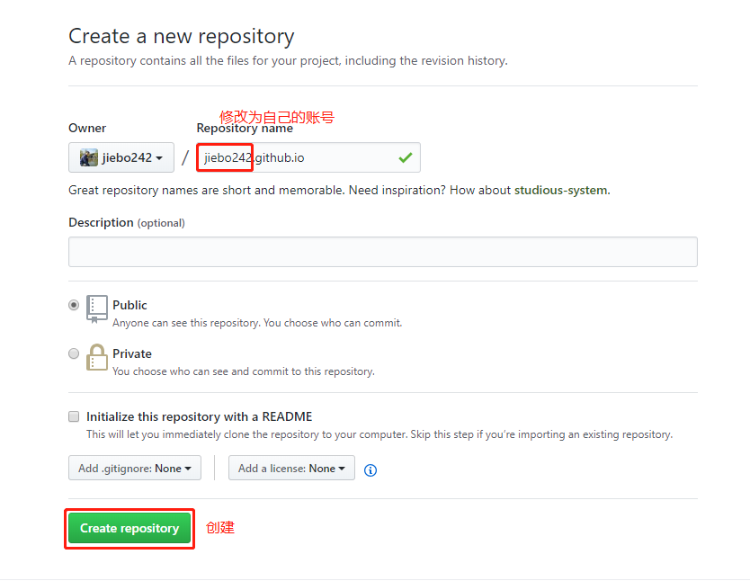
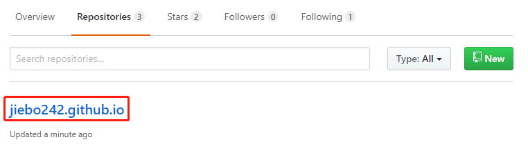
More info: Github page主页
安装node.js
因为hexo是基于node.js开发的，所以需要安装，到node.js官网下载安装包，默认安装即可
安装git
到git官网下载安装包，默认安装即可
安装hexo
在安装hexo之前，你需要保证环境中有Node.js和Git环境。
Hexo是采用命令方式(命令工具使用cmd，powershell、gitbash都可以)安装的：
npm install -g hexo-cli
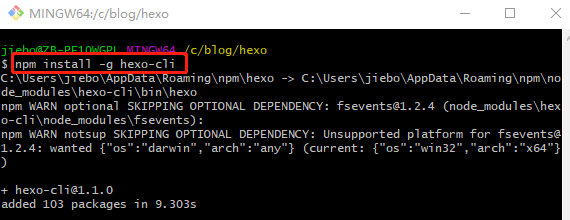
不管你在什么位置执行此命令，hexo都是安装在了默认位置：
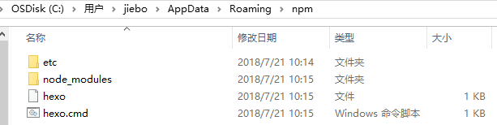
通过hexo建站
$ hexo init <folder>
$ cd <folder>
$ npm install
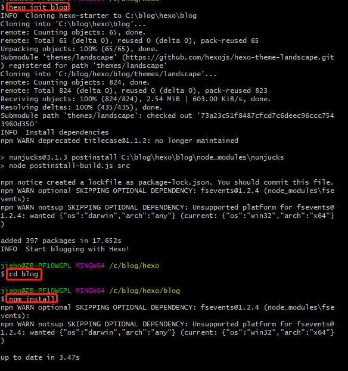
生成文件的路径就是当前执行命令的目录下面
启动hexo服务,默认端口是4000：
hexo server
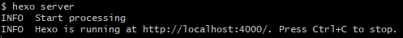
访问页面http://localhost:4000/可以看到hexo的一个默认页面及主题了，默认主题Landscape
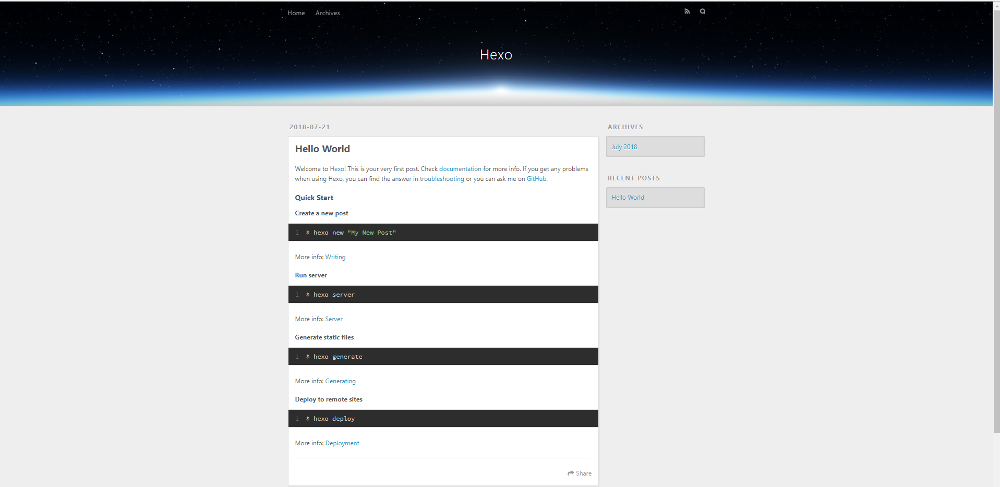
发布新博客
$ hexo new <title>
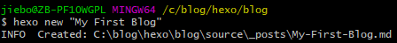
重新启动hexo后，就可以看到新的博客了：
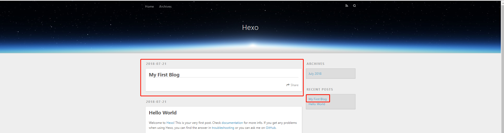
博客页面使用markdown标记语言编写的，所以需要学习markdown的使用和语法
将本地hexo文件部署到GitHub
配置站点的_config.yml文件，添加部署的相关配置，我使用的是git：
# Deployment
## Docs: https://hexo.io/docs/deployment.html
deploy:
type: git
repo: https://github.com/jiebo242/jiebo242.github.io.git
branch: master
安装hexo-git部署的插件，不然会报错”ERROR Deployer not found:git”
部署的本质是把本地编译好的public目录给上传到github上面了
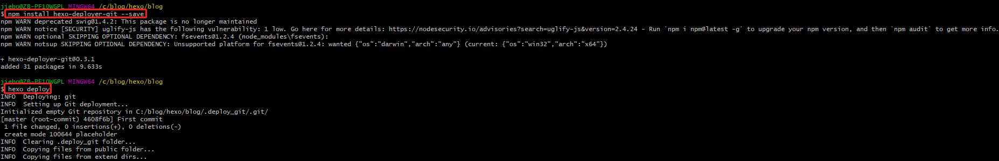
通过上面的步骤，可以满足最基本的发布博客的需求了，下面的操作则属于扩展优化
安装自己喜欢的主题
通过主题来修改页面风格，此处我选择的是next主题，从git上下载最新的主题包到themes目录下：
git clone https://github.com/iissnan/hexo-theme-next themes/next
然后通过配置主题的配置文件_config.yml来进行主题的个性化设置(站点Scheme、站点信息、菜单(分类、标签页)、侧栏、头像、代码高亮风格、背景动画等),详细操作可根据next主题官网的操作步骤。
参考：
hexo主题总站
好看主题推荐
主题个性化设置
安装一些第三方服务
评论框：livere来必力
阅读次数统计：LeanCloud
数据统计分析、内容分享、搜索服务、网站收录：没弄
详细操作可根据next主题官网-第三方服务集成的操作步骤。
绑定个人域名
不想使用github的二级域名的，可以自己购买独立域名并进行绑定，具体操作参考：Hexo(5)-购买并绑定域名